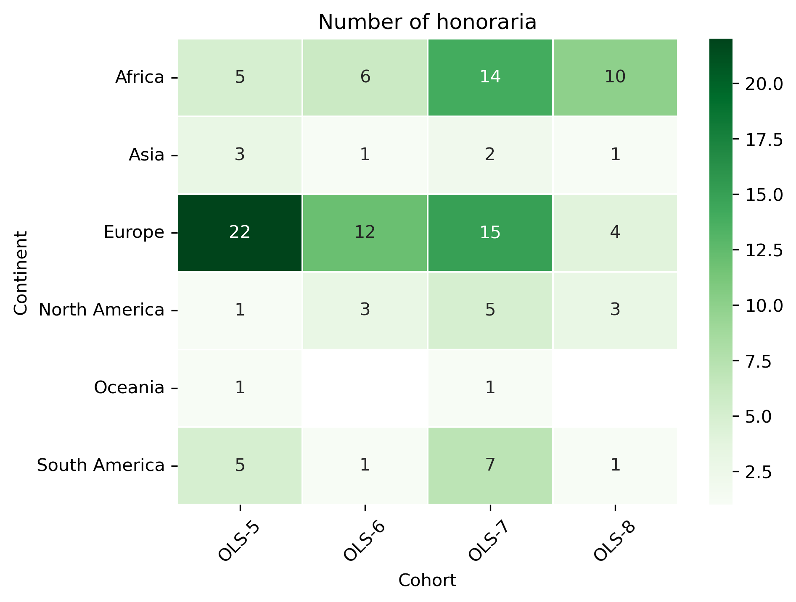

Microgrants & Honoraria#
from pathlib import Path
import re
import matplotlib.pyplot as plt
import pandas as pd
import pycountry
import seaborn as sns
import geopandas
path = geopandas.datasets.get_path('naturalearth_lowres')
world_df = geopandas.read_file(path)
country_continent_fp = Path("../data/country_alpha_2_continent.csv")
country_continent_df = (
pd.read_csv(country_continent_fp, index_col=0)
)
COUNTRY_ALPHA2_TO_CONTINENT = country_continent_df.to_dict()['Continent']
def get_continent(country):
"""
Get continent
:param country: name of the country
"""
py_country = pycountry.countries.get(name=country)
if py_country is None:
py_country = pycountry.countries.get(common_name=country)
if py_country is None:
return ""
else:
if py_country.alpha_2 not in COUNTRY_ALPHA2_TO_CONTINENT:
return ""
else:
return COUNTRY_ALPHA2_TO_CONTINENT[py_country.alpha_2]
def get_country_3(country):
"""
Get country code
:param country: name of the country
"""
py_country = pycountry.countries.get(name=country)
if py_country is None:
py_country = pycountry.countries.get(common_name=country)
if py_country is None:
return ""
else:
return py_country.alpha_3
rate = {
"GBP": 1,
"USD": 0.8,
"EUR": 0.86,
"INR": 0.0095,
"XAF": 0.0013,
"ZAR": 0.042,
"ARS": 0.0022,
"": 1
}
---------------------------------------------------------------------------
AttributeError Traceback (most recent call last)
Cell In[2], line 1
----> 1 path = geopandas.datasets.get_path('naturalearth_lowres')
2 world_df = geopandas.read_file(path)
4 country_continent_fp = Path("../data/country_alpha_2_continent.csv")
File /usr/share/miniconda/envs/ols-stats/lib/python3.12/site-packages/geopandas/datasets/__init__.py:18, in get_path(dataset)
12 error_msg = (
13 "The geopandas.dataset has been deprecated and was removed in GeoPandas "
14 f"1.0. You can get the original '{dataset}' data from "
15 f"{ne_message if 'natural' in dataset else nybb_message}"
16 )
17 if dataset in _prev_available:
---> 18 raise AttributeError(error_msg)
19 else:
20 error_msg = (
21 "The geopandas.dataset has been deprecated and "
22 "was removed in GeoPandas 1.0. New sample datasets are now available "
23 "in the geodatasets package (https://geodatasets.readthedocs.io/en/latest/)"
24 )
AttributeError: The geopandas.dataset has been deprecated and was removed in GeoPandas 1.0. You can get the original 'naturalearth_lowres' data from https://www.naturalearthdata.com/downloads/110m-cultural-vectors/.
Microgrants#
url = "https://docs.google.com/spreadsheets/d/1KmIyBNbrP1_AEc8XIBQQFbzWHy4AZE3iU14xcREVJ7s/export?format=csv&gid=0"
microg_bf_civi_df = (
pd.read_csv(url)
.assign(Item= lambda df: df.Item.str.split(", "))
.fillna("")
)
microg_bf_civi_df["Continent"] = microg_bf_civi_df.Country.apply(lambda x: get_continent(x))
microg_bf_civi_df["Rate"] = microg_bf_civi_df.Currency.apply(lambda x: rate[x])
microg_bf_civi_df=(
microg_bf_civi_df
.assign(Cost= lambda df: df.Cost * df.Rate)
.drop(columns = ["Currency", "Rate"])
)
microg_in_civi_fp = Path("../data/openseeds/microgrants.csv")
microg_in_civi_df = (
pd.read_csv(microg_in_civi_fp)
.fillna("")
.rename(columns = {
"Microgrant request: Cohort": "Cohort",
"Microgrant request: Final cost (incl currency)": "Cost",
"Microgrant request: Requested items": "Items",
"Contact: ": "Country",
})
.drop(columns = ["Case ID"])
)
microg_in_civi_df["Continent"] = microg_in_civi_df.Country.apply(lambda x: get_continent(x))
# get cost
def get_gbp_amount(amount):
if amount == "":
return 0
if " " in amount:
a_s = amount.split(" ")
currency = a_s[1].upper()
amount = float(a_s[0])
else:
a_s = re.split('(\d+\.*\d+)',amount)
currency = a_s[2].upper()
amount = float(a_s[1])
return amount * rate[currency]
amounts = []
for amount in microg_in_civi_df.Cost:
if amount == "0":
amounts.append(0)
elif "+" in amount:
new_amout = 0
for sub_a in amount.split(" + "):
new_amout += get_gbp_amount(sub_a)
amounts.append(new_amout)
else:
amounts.append(get_gbp_amount(amount))
microg_in_civi_df["Cost"] = amounts
# get items
items = []
for item in microg_in_civi_df.Items:
new_item = set()
if "internet" in item:
new_item.add("Internet")
if "Internet" in item:
new_item.add("Internet")
if "Data subscription" in item:
new_item.add("Internet")
if "mobile data" in item:
new_item.add("Internet")
if "Book" in item:
new_item.add("Book")
if "microphone" in item:
new_item.add("Headset")
if "Microphone" in item:
new_item.add("Headset")
if "headset" in item:
new_item.add("Headset")
if "Headset" in item:
new_item.add("Headset")
if "headphones" in item:
new_item.add("Headset")
if "earbuds" in item:
new_item.add("Headset")
if "webcam" in item:
new_item.add("Webcam")
if "Webcam" in item:
new_item.add("Webcam")
if "marketing and merchandising expenses" in item:
new_item.add("Marketing")
if "childcare" in item:
new_item.add("Childcare")
if "Childcare" in item:
new_item.add("Childcare")
if "Mouse" in item:
new_item.add("Mouse")
if "modem" in item:
new_item.add("Modem")
if "Router" in item:
new_item.add("Modem")
if "batteries" in item:
new_item.add("Battery")
if "battery" in item:
new_item.add("Battery")
if "Powerbank" in item:
new_item.add("Battery")
if "keyboard" in item:
new_item.add("Keyboard")
if "Keyboard" in item:
new_item.add("Keyboard")
if "new computer" in item:
new_item.add("Laptop")
if "Dell Latitude" in item:
new_item.add("Laptop")
if "Hard disk" in item:
new_item.add("Hardrive")
if "Memory card" in item:
new_item.add("Hardrive")
if "hard drive" in item:
new_item.add("Hardrive")
if "chair" in item:
new_item.add("Other")
if "license" in item:
new_item.add("Other")
if "prototype" in item:
new_item.add("Other")
if "Gasoline" in item:
new_item.add("Other")
if "Fuel" in item:
new_item.add("Other")
if "implementation of the project" in item:
new_item.add("Other")
items.append(list(new_item))
microg_in_civi_df["Item"] = items
microg_in_civi_df = (
microg_in_civi_df
.drop(columns=["Items"])
.query('Cost > 0')
)
microg_df = pd.concat([microg_bf_civi_df, microg_in_civi_df], ignore_index=True)
microg_df["Country_3"] = microg_df.Country.apply(lambda x: get_country_3(x))
microg_df
| Cohort | Country | Cost | Item | Continent | Country_3 | |
|---|---|---|---|---|---|---|
| 0 | OLS-3 | India | 5.600 | [Headset] | Asia | IND |
| 1 | OLS-3 | United Kingdom | 90.248 | [Internet] | Europe | GBR |
| 2 | OLS-3 | India | 43.250 | [Headset, Webcam] | Asia | IND |
| 3 | OLS-3 | Nepal | 179.400 | [Webcam, Laptop, Other] | Asia | NPL |
| 4 | OLS-3 | Nigeria | 49.940 | [Headset] | Africa | NGA |
| ... | ... | ... | ... | ... | ... | ... |
| 84 | OLS-8 | Malaysia | 80.080 | [Internet] | Asia | MYS |
| 85 | OLS-8 | Kenya | 40.500 | [Headset, Internet] | Africa | KEN |
| 86 | OLS-8 | Nigeria | 116.650 | [Hardrive, Other, Internet] | Africa | NGA |
| 87 | OLS-8 | Nigeria | 144.000 | [Hardrive, Other, Headset, Internet] | Africa | NGA |
| 88 | OLS-8 | Nigeria | 145.000 | [Other, Hardrive, Mouse, Battery, Headset, Int... | Africa | NGA |
89 rows 6 columns
Overview#
Number of microgrants
len(microg_df)
89
Total amount (in GBP)
sum(microg_df.Cost)
13055.637700000001
Mean amount per microgrant
microg_df.Cost.mean()
146.6925584269663
Minimum amout for a microgrant
microg_df.Cost.min()
5.6000000000000005
Maximum amount for a microgrant
microg_df.Cost.max()
1020.0
Cohort#
number_df = (
microg_df
.groupby(by="Cohort")
.count()
.drop(columns = ["Cost", "Country", "Continent", "Country_3"])
.rename(columns = {"Item": "Number"})
)
amount_df = (
microg_df
.drop(columns = ["Item", "Country", "Continent", "Country_3"])
.groupby(by="Cohort")
.sum()
)
cohort_microg_df = number_df.join(amount_df)
cohort_microg_df
| Number | Cost | |
|---|---|---|
| Cohort | ||
| OLS-3 | 6 | 375.9260 |
| OLS-4 | 3 | 135.0400 |
| OLS-5 | 16 | 1566.0657 |
| OLS-6 | 12 | 2701.1726 |
| OLS-7 | 32 | 5659.1794 |
| OLS-8 | 20 | 2618.2540 |
fig, ax = plt.subplots()
fig.set_dpi(300)
(cohort_microg_df.Number
.transpose()
.plot.bar(ax=ax, color="#139D3D"))
plt.ylabel("Number of microgrants")
plt.xlabel("")
Text(0.5, 0, '')
fig, ax = plt.subplots()
fig.set_dpi(300)
(cohort_microg_df.Cost
.transpose()
.plot.bar(ax=ax, color="#139D3D"))
plt.ylabel("Amount (GPB)")
plt.xlabel("")
Text(0.5, 0, '')
Country#
Number of microgrants#
country_code_df = (
microg_df
.drop(columns = ["Item", "Country", "Cohort", "Continent"])
.groupby(['Country_3'])
.count()
.rename(columns = {'Cost': 'total'})
.rename_axis("iso_a3")
.reset_index()
)
country_code_df
| iso_a3 | total | |
|---|---|---|
| 0 | ARG | 5 |
| 1 | BOL | 2 |
| 2 | BRA | 1 |
| 3 | CHE | 1 |
| 4 | CHL | 1 |
| 5 | CMR | 13 |
| 6 | COL | 3 |
| 7 | EGY | 1 |
| 8 | ESP | 1 |
| 9 | FRA | 1 |
| 10 | GBR | 5 |
| 11 | IND | 10 |
| 12 | IRL | 2 |
| 13 | KEN | 12 |
| 14 | MYS | 1 |
| 15 | NGA | 19 |
| 16 | NLD | 5 |
| 17 | NPL | 1 |
| 18 | SWZ | 1 |
| 19 | UGA | 1 |
| 20 | USA | 1 |
| 21 | UZB | 1 |
| 22 | ZAF | 1 |
country_world_df = (
pd.merge(world_df, country_code_df, on='iso_a3', how='outer')
.fillna(0)
)
fig, ax = plt.subplots(figsize=(15, 10))
fig.set_dpi(300)
country_world_df.plot(
column='total',
ax=ax,
legend=True,
legend_kwds={'label': "Number of microgrants", 'orientation': "horizontal"},
cmap='YlGn')
ax.set_axis_off()
Amount (GBP)#
country_code_df = (
microg_df
.drop(columns = ["Item", "Country", "Cohort", "Continent"])
.groupby(['Country_3'])
.sum()
.rename(columns = {'Cost': 'total'})
.rename_axis("iso_a3")
.reset_index()
)
country_world_df = (
pd.merge(world_df, country_code_df, on='iso_a3', how='outer')
.fillna(0)
)
fig, ax = plt.subplots(figsize=(15, 10))
fig.set_dpi(300)
country_world_df.plot(
column='total',
ax=ax,
legend=True,
legend_kwds={'label': "Amount (GPB)", 'orientation': "horizontal"},
cmap='YlGn')
ax.set_axis_off()
Continent#
number_df = (
microg_df
.groupby(by="Continent")
.count()
.drop(columns = ["Cost", "Country", "Item", "Country_3"])
.rename(columns = {"Cohort": "Number"})
)
amount_df = (
microg_df
.drop(columns = ["Item", "Country", "Cohort", "Country_3"])
.groupby(by="Continent")
.sum()
)
continent_microg_df = number_df.join(amount_df)
tmp = continent_microg_df[continent_microg_df.index!=''].sort_values("Number")
continent_microg_df = pd.concat([continent_microg_df[continent_microg_df.index==''], tmp])
continent_microg_df
| Number | Cost | |
|---|---|---|
| Continent | ||
| North America | 1 | 51.9520 |
| South America | 12 | 1128.3018 |
| Asia | 13 | 748.8995 |
| Europe | 15 | 1075.4892 |
| Africa | 48 | 10050.9952 |
fig, ax = plt.subplots()
fig.set_dpi(300)
(continent_microg_df.Number
.transpose()
.plot.bar(ax=ax, color="#139D3D"))
plt.ylabel("Number of microgrants")
plt.xlabel("")
Text(0.5, 0, '')
fig, ax = plt.subplots()
fig.set_dpi(300)
(continent_microg_df.Cost
.transpose()
.plot.bar(ax=ax, color="#139D3D"))
plt.ylabel("Amount (GPB)")
plt.xlabel("")
Text(0.5, 0, '')
Cohort and continent#
Number of microgrants#
cohort_continent_df = (
microg_df
.drop(columns = ["Item", "Country", "Country_3"])
.groupby(by=["Continent","Cohort"])
.count()
)
cohort_continent_df = (
pd.pivot_table(cohort_continent_df, index = 'Continent', columns = 'Cohort', values="Cost")
.reindex(['Africa', 'Asia', 'Europe', 'North America', 'Oceania', 'South America'])
)
cohort_continent_df
| Cohort | OLS-3 | OLS-4 | OLS-5 | OLS-6 | OLS-7 | OLS-8 |
|---|---|---|---|---|---|---|
| Continent | ||||||
| Africa | 2.0 | 1.0 | 5.0 | 6.0 | 21.0 | 13.0 |
| Asia | 3.0 | 2.0 | 5.0 | 1.0 | 1.0 | 1.0 |
| Europe | 1.0 | NaN | 3.0 | 5.0 | 3.0 | 3.0 |
| North America | NaN | NaN | NaN | NaN | 1.0 | NaN |
| Oceania | NaN | NaN | NaN | NaN | NaN | NaN |
| South America | NaN | NaN | 3.0 | NaN | 6.0 | 3.0 |
fig, ax = plt.subplots()
fig.set_dpi(300)
sns.heatmap(cohort_continent_df, cmap='Greens', linewidths=0.5, annot=True)
plt.xticks(rotation=45)
plt.yticks(rotation='horizontal')
ax.set_title('Number of microgrants')
plt.show()
fig, ax = plt.subplots()
fig.set_dpi(300)
(cohort_continent_df
.transpose()
.plot.bar(stacked=True, ax=ax, colormap='tab20c'))
plt.xlabel('Cohorts')
plt.ylabel('Number of microgrants')
ax.legend(
# loc='center left',
# bbox_to_anchor=(1, 0.5),
# frameon=False,
fontsize='x-small')
<matplotlib.legend.Legend at 0x13d68add0>
Amount (GBP)#
cohort_continent_df = (
microg_df
.drop(columns = ["Item", "Country", "Country_3"])
.groupby(by=["Continent","Cohort"])
.sum()
)
cohort_continent_df = (
pd.pivot_table(cohort_continent_df, index = 'Continent', columns = 'Cohort', values="Cost")
.reindex(['Africa', 'Asia', 'Europe', 'North America', 'Oceania', 'South America'])
)
cohort_continent_df
| Cohort | OLS-3 | OLS-4 | OLS-5 | OLS-6 | OLS-7 | OLS-8 |
|---|---|---|---|---|---|---|
| Continent | ||||||
| Africa | 57.428 | 9.40 | 1004.2960 | 2079.7326 | 4764.8786 | 2135.260 |
| Asia | 228.250 | 125.64 | 216.8495 | 44.9800 | 53.1000 | 80.080 |
| Europe | 90.248 | NaN | 93.6884 | 576.4600 | 183.5228 | 131.570 |
| North America | NaN | NaN | NaN | NaN | 51.9520 | NaN |
| Oceania | NaN | NaN | NaN | NaN | NaN | NaN |
| South America | NaN | NaN | 251.2318 | NaN | 605.7260 | 271.344 |
fig, ax = plt.subplots()
fig.set_dpi(300)
sns.heatmap(cohort_continent_df, cmap='Greens', linewidths=0.5, annot=True)
plt.xticks(rotation=45)
plt.yticks(rotation='horizontal')
ax.set_title('Amount (GBP)')
plt.show()
fig, ax = plt.subplots()
fig.set_dpi(300)
(cohort_continent_df
.transpose()
.plot.bar(stacked=True, ax=ax, colormap='tab20c'))
plt.xlabel('Cohorts')
plt.ylabel('Amount (GBP)')
ax.legend(
# loc='center left',
# bbox_to_anchor=(1, 0.5),
# frameon=False,
fontsize='x-small')
<matplotlib.legend.Legend at 0x13db209d0>
Items#
item_df = (
microg_df
.drop(columns = ["Continent", "Country", "Country_3", "Cost"])
.explode('Item')
.groupby(by='Item')
.count()
.rename(columns = {"Cohort": "Number"})
.sort_values('Number')
)
item_df.sort_values('Number',ascending=False).head(10)
| Number | |
|---|---|
| Item | |
| Headset | 50 |
| Internet | 40 |
| Webcam | 28 |
| Battery | 10 |
| Other | 9 |
| Childcare | 7 |
| Modem | 6 |
| Mouse | 6 |
| Hardrive | 4 |
| Laptop | 4 |
fig, ax = plt.subplots()
fig.set_dpi(300)
(item_df.Number
.transpose()
.plot.bar(ax=ax, color="#139D3D"))
plt.ylabel("Requested items")
plt.xlabel("")
Text(0.5, 0, '')
Honoraria#
url = "https://docs.google.com/spreadsheets/d/1OUO4HcCeGfU9OfgrSif-sdDiqUKrxqsppxjvwns9wPE/export?format=csv&gid=0"
honor_bf_civi_df = (
pd.read_csv(url)
.fillna("")
)
honor_bf_civi_df["Continent"] = honor_bf_civi_df.Country.apply(lambda x: get_continent(x))
honor_in_civi_fp = Path("../data/openseeds/honorarium.csv")
honor_in_civi_df = (
pd.read_csv(honor_in_civi_fp)
.fillna("")
.rename(columns = {
"Honorarium administration: Cohort": "Cohort",
"Honorarium administration: Role": "Role",
"Honorarium administration: Final cost": "Amount",
"Contact: ": "Country",
})
.replace("Speaker (Expert talk)", "speaker")
.replace("speaker for Open Data", "speaker")
.replace("Speaker", "speaker")
.replace("Mentor", "mentor")
.replace("Call Facilitator", "facilitator")
.replace("Call facilitator", "facilitator")
.replace("Facilitator (co-hosted 2 meetings and Transcription of the three (3) graduation videos", "facilitator")
.replace("Transcription of the videos, preparing guideline for the transcription", "facilitator")
.replace("facilitator role (transcript check - week 2 and 3 cohort calls)", "facilitator")
.replace("facilitator (co-host a session )", "facilitator")
.replace("facilitator (co-host a session)", "facilitator")
.replace("Facilitator - transcription check", "facilitator")
.replace("facilitator; transcription check", "facilitator")
.replace("Video Facilitator", "facilitator")
.replace("transcription check", "facilitator")
.replace("Ally Skills workshop facilitator", "facilitator")
.replace("Facilitator and Speaker", "speaker, facilitator")
.replace("Mentor and expert", "mentor")
.replace("co-facilitator, transcriber", "facilitator")
.replace("Facilitator", "facilitator")
.drop(columns = ["Case ID"])
)
honor_in_civi_df["Currency"] = honor_in_civi_df.Amount.apply(lambda x: x.split(" ")[1] if " " in x else "")
honor_in_civi_df["Amount"] = honor_in_civi_df.Amount.apply(lambda x: float(x.split(" ")[0]) if " " in x else 0)
honor_in_civi_df["Continent"] = honor_in_civi_df.Country.apply(lambda x: get_continent(x))
honor_df = (
pd.concat([honor_bf_civi_df, honor_in_civi_df], ignore_index=True)
)
honor_df["Rate"] = honor_df.Currency.apply(lambda x: rate[x])
honor_df=(
honor_df
.assign(Amount= lambda df: df.Amount * df.Rate)
.assign(Role= lambda df: df.Role.str.title())
.drop(columns = ["Currency", "Rate"])
)
honor_df
| Cohort | Role | Amount | Country | Continent | |
|---|---|---|---|---|---|
| 0 | OLS-6 | Speaker | 212.9300 | Colombia | South America |
| 1 | OLS-6 | Facilitator | 377.4900 | United Kingdom | Europe |
| 2 | OLS-6 | Speaker | 211.5300 | United Kingdom | Europe |
| 3 | OLS-6 | Speaker | 212.5700 | ||
| 4 | OLS-6 | Speaker | 211.0700 | Netherlands | Europe |
| ... | ... | ... | ... | ... | ... |
| 138 | OLS-7 | Facilitator | 121.3700 | ||
| 139 | OLS-7 | Facilitator | 59.6926 | France | Europe |
| 140 | OLS-6 | Mentor | 416.9800 | Germany | Europe |
| 141 | OLS-7 | Mentor | 393.9402 | Germany | Europe |
| 142 | OLS-7 | Mentor | 0.0000 |
143 rows 5 columns
Overview#
Number of honoraria
len(honor_df)
143
Total amount (in GBP)
sum(honor_df.Amount)
34908.9642
Mean amount per honorarium
sum(honor_df.Amount)/len(honor_df)
244.11863076923078
Cohort#
number_df = (
honor_df
.groupby(by="Cohort")
.count()
.drop(columns = ["Amount", "Country", "Continent"])
.rename(columns = {"Role": "Number"})
)
amount_df = (
honor_df
.drop(columns = ["Role", "Country", "Continent"])
.groupby(by="Cohort")
.sum()
)
cohort_honor_df = number_df.join(amount_df)
cohort_honor_df
| Number | Amount | |
|---|---|---|
| Cohort | ||
| OLS-5 | 38 | 11926.6882 |
| OLS-6 | 25 | 5651.0730 |
| OLS-7 | 52 | 13526.7310 |
| OLS-8 | 28 | 3804.4720 |
fig, ax = plt.subplots()
fig.set_dpi(300)
(cohort_honor_df.Number
.transpose()
.plot.bar(ax=ax, color="#139D3D"))
plt.ylabel("Number of honoraria")
plt.xlabel("")
Text(0.5, 0, '')
fig, ax = plt.subplots()
fig.set_dpi(300)
(cohort_honor_df.Amount
.transpose()
.plot.bar(ax=ax, color="#139D3D"))
plt.ylabel("Amount (GPB)")
plt.xlabel("")
Text(0.5, 0, '')
Role#
number_df = (
honor_df
.groupby(by="Role")
.count()
.drop(columns = ["Amount", "Country", "Continent"])
.rename(columns = {"Cohort": "Number"})
)
amount_df = (
honor_df
.drop(columns = ["Cohort", "Country", "Continent"])
.groupby(by="Role")
.sum()
#.drop(columns = ["Role"])
)
role_honor_df = (
number_df.join(amount_df)
.sort_values("Number")
)
role_honor_df
| Number | Amount | |
|---|---|---|
| Role | ||
| Speaker, Facilitator | 1 | 370.5800 |
| Facilitator, Mentor | 2 | 906.3608 |
| Facilitator | 33 | 5071.8482 |
| Mentor | 51 | 18265.9622 |
| Speaker | 56 | 10294.2130 |
fig, ax = plt.subplots()
fig.set_dpi(300)
(role_honor_df.Number
.transpose()
.plot.bar(ax=ax, color="#139D3D"))
plt.ylabel("Number of honoraria")
plt.xlabel("")
Text(0.5, 0, '')

fig, ax = plt.subplots()
fig.set_dpi(300)
(role_honor_df.Amount
.transpose()
.plot.bar(ax=ax, color="#139D3D"))
plt.ylabel("Amount (GPB)")
plt.xlabel("")
Text(0.5, 0, '')
Continent#
number_df = (
honor_df
.groupby(by="Continent")
.count()
.drop(columns = ["Amount", "Country", "Role"])
.rename(columns = {"Cohort": "Number"})
)
amount_df = (
honor_df
.drop(columns = ["Role", "Country", "Cohort"])
.groupby(by="Continent")
.sum()
)
continent_honor_df = number_df.join(amount_df)
tmp = continent_honor_df[continent_honor_df.index!=''].sort_values("Number")
continent_honor_df = pd.concat([tmp, continent_honor_df[continent_honor_df.index=='']])
continent_honor_df
| Number | Amount | |
|---|---|---|
| Continent | ||
| Oceania | 2 | 403.6200 |
| Asia | 7 | 1851.4600 |
| North America | 12 | 3052.8180 |
| South America | 14 | 3942.5440 |
| Africa | 35 | 8013.4230 |
| Europe | 53 | 14390.0392 |
| 20 | 3255.0600 |
fig, ax = plt.subplots()
fig.set_dpi(300)
(continent_honor_df.Number
.transpose()
.plot.bar(ax=ax, color="#139D3D"))
plt.ylabel("Number of honoraria")
plt.xlabel("")
Text(0.5, 0, '')

fig, ax = plt.subplots()
fig.set_dpi(300)
(continent_honor_df.Amount
.transpose()
.plot.bar(ax=ax, color="#139D3D"))
plt.ylabel("Amount (GPB)")
plt.xlabel("")
Text(0.5, 0, '')

Cohort and role#
Number of honoraria#
cohort_role_df = (
honor_df
.drop(columns = ["Continent", "Country"])
.groupby(by=["Role","Cohort"])
.count()
)
cohort_role_df = (
pd.pivot_table(cohort_role_df, index = 'Role', columns = 'Cohort', values="Amount")
.reindex(['Facilitator, Mentor', 'Mentor', 'Facilitator', 'Speaker', 'Speaker, Facilitator'])
)
cohort_role_df
| Cohort | OLS-5 | OLS-6 | OLS-7 | OLS-8 |
|---|---|---|---|---|
| Role | ||||
| Facilitator, Mentor | 2.0 | NaN | NaN | NaN |
| Mentor | 20.0 | 3.0 | 28.0 | NaN |
| Facilitator | 4.0 | 7.0 | 11.0 | 11.0 |
| Speaker | 12.0 | 14.0 | 13.0 | 17.0 |
| Speaker, Facilitator | NaN | 1.0 | NaN | NaN |
fig, ax = plt.subplots()
fig.set_dpi(300)
sns.heatmap(cohort_role_df[::-1], cmap='Greens', linewidths=0.5, annot=True)
plt.xticks(rotation=45)
plt.yticks(rotation='horizontal')
ax.set_title('Number of honoraria')
plt.show()
fig, ax = plt.subplots()
fig.set_dpi(300)
(cohort_role_df
.transpose()
.plot.bar(stacked=True, ax=ax, colormap='tab20c'))
plt.xlabel('Cohort')
plt.ylabel('Number of honoraria')
ax.legend(
# loc='center left',
# bbox_to_anchor=(1, 0.5),
# frameon=False,
fontsize='x-small')
<matplotlib.legend.Legend at 0x13d75a650>
Amount (GBP)#
cohort_role_df = (
honor_df
.drop(columns = ["Continent", "Country"])
.groupby(by=["Role","Cohort"])
.sum()
)
cohort_role_df = (
pd.pivot_table(cohort_role_df, index = 'Role', columns = 'Cohort', values="Amount")
.reindex(['Facilitator, Mentor', 'Mentor', 'Facilitator', 'Speaker', 'Speaker, Facilitator'])
)
cohort_role_df
| Cohort | OLS-5 | OLS-6 | OLS-7 | OLS-8 |
|---|---|---|---|---|
| Role | ||||
| Facilitator, Mentor | 906.3608 | NaN | NaN | NaN |
| Mentor | 7385.3404 | 1254.680 | 9625.9418 | NaN |
| Facilitator | 1239.8700 | 1332.400 | 1287.5526 | 1212.0256 |
| Speaker | 2395.1170 | 2693.413 | 2613.2366 | 2592.4464 |
| Speaker, Facilitator | NaN | 370.580 | NaN | NaN |
fig, ax = plt.subplots()
fig.set_dpi(300)
sns.heatmap(cohort_role_df[::-1], cmap='Greens', linewidths=0.5, annot=True)
plt.xticks(rotation=45)
plt.yticks(rotation='horizontal')
ax.set_title('Amount (GBP)')
plt.show()
fig, ax = plt.subplots()
fig.set_dpi(300)
(cohort_role_df
.transpose()
.plot.bar(stacked=True, ax=ax, colormap='tab20c'))
plt.xlabel('Cohort')
plt.ylabel('Amount (GBP)')
ax.legend(
# loc='center left',
# bbox_to_anchor=(1, 0.5),
# frameon=False,
fontsize='x-small')
<matplotlib.legend.Legend at 0x13f6d2dd0>
Cohort and continent#
Number of honoraria#
cohort_continent_df = (
honor_df
.drop(columns = ["Role", "Country"])
.groupby(by=["Continent","Cohort"])
.count()
)
cohort_continent_df = (
pd.pivot_table(cohort_continent_df, index = 'Continent', columns = 'Cohort', values="Amount")
.reindex(['Africa', 'Asia', 'Europe', 'North America', 'Oceania', 'South America'])
)
cohort_continent_df
| Cohort | OLS-5 | OLS-6 | OLS-7 | OLS-8 |
|---|---|---|---|---|
| Continent | ||||
| Africa | 5.0 | 6.0 | 14.0 | 10.0 |
| Asia | 3.0 | 1.0 | 2.0 | 1.0 |
| Europe | 22.0 | 12.0 | 15.0 | 4.0 |
| North America | 1.0 | 3.0 | 5.0 | 3.0 |
| Oceania | 1.0 | NaN | 1.0 | NaN |
| South America | 5.0 | 1.0 | 7.0 | 1.0 |
fig, ax = plt.subplots()
fig.set_dpi(300)
sns.heatmap(cohort_continent_df, cmap='Greens', linewidths=0.5, annot=True)
plt.xticks(rotation=45)
plt.yticks(rotation='horizontal')
ax.set_title('Number of honoraria')
plt.show()

fig, ax = plt.subplots()
fig.set_dpi(300)
(cohort_continent_df
.transpose()
.plot.bar(stacked=True, ax=ax, colormap='tab20c'))
plt.xlabel('Cohorts')
plt.ylabel('Number of honoraria')
ax.legend(
# loc='center left',
# bbox_to_anchor=(1, 0.5),
# frameon=False,
fontsize='x-small')
<matplotlib.legend.Legend at 0x13f8ce090>
Amount (GBP)#
cohort_continent_df = (
honor_df
.drop(columns = ["Role", "Country"])
.groupby(by=["Continent","Cohort"])
.sum()
)
cohort_continent_df = (
pd.pivot_table(cohort_continent_df, index = 'Continent', columns = 'Cohort', values="Amount")
.reindex(['Africa', 'Asia', 'Europe', 'North America', 'Oceania', 'South America'])
)
cohort_continent_df
| Cohort | OLS-5 | OLS-6 | OLS-7 | OLS-8 |
|---|---|---|---|---|
| Continent | ||||
| Africa | 1865.4200 | 1383.213 | 3400.460 | 1364.330 |
| Asia | 842.8000 | 211.140 | 598.770 | 198.750 |
| Europe | 6963.7682 | 2776.940 | 4190.479 | 458.852 |
| North America | 408.4100 | 854.280 | 1588.712 | 201.416 |
| Oceania | 200.0000 | NaN | 203.620 | NaN |
| South America | 1445.5100 | 212.930 | 2103.720 | 180.384 |
fig, ax = plt.subplots()
fig.set_dpi(300)
sns.heatmap(cohort_continent_df, cmap='Greens', linewidths=0.5, annot=True)
plt.xticks(rotation=45)
plt.yticks(rotation='horizontal')
ax.set_title('Amount (GBP)')
plt.show()
fig, ax = plt.subplots()
fig.set_dpi(300)
(cohort_continent_df
.transpose()
.plot.bar(stacked=True, ax=ax, colormap='tab20c'))
plt.xlabel('Cohorts')
plt.ylabel('Amount (GBP)')
ax.legend(
# loc='center left',
# bbox_to_anchor=(1, 0.5),
# frameon=False,
fontsize='x-small')
<matplotlib.legend.Legend at 0x13fad4990>
# when Civi API
CIVI_API = "" #os.getenv('CIVI_API')
headers = {
# "X-Civi-Auth": f"Bearer {CIVI_API}",
'Content-Type': "application/x-www-form-urlencoded",
}
selected_fields = ["Honorarium_administration.Cohort","Honorarium_administration.Role","Honorarium_administration.Final_cost"]
s_f_str = '['
for f in selected_fields:
s_f_str = f'{s_f_str}, {f}'
s_f_str = f'{s_f_str}]'
where_fields = [["case_type_id:label","=","Honorarium"]]
w_f_str = '['
for f in where_fields:
w_f_str = f'{w_f_str}, [{f[0]}, {f[1]}, {f[2]}]'
w_f_str = f'{s_f_str}]'
data = {
#"params": f'{"select": {s_f_str}, "where": {w_f_str}, "limit":200}',
}
#response = requests.post('https://openlifescience.civicrm.org/civicrm/ajax/api4/Case/get', headers=headers, data=data)